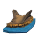

Fish & miscellaneous
Fish & miscellaneous in Valheim – 33 items with biome, source, required tool, recipe and uses.
No item found.
 Ancient Seed
Ancient Seed
Held against your ear, you hear tiny whisperings within...
How to get it
- Dropped by: Greydwarf Brute · Black Forest · 33 % chance
- Break: Greydwarf nest
Used for
- Ingredient for: Heart of the Forest
- Summons the boss: The Elder (3 ×)
 Anglerfish
Anglerfish
The dangling light makes it easier to see that pretty little face!
How to get it
- Fishing: Mistlands · Bait: Misty Fishing Bait
Used for
- Ingredient for: Fishing Hat, Raw Fish, Uncooked Fish 'n' Bread
 Asksvin Saddle
Asksvin Saddle
The back of an asksvin is rather lumpy, so you'll need a saddle if you want to ride one.
How to get it
- Craft: Black Forge (level 2) from 6 ×
 Flametal, 20 ×
Flametal, 20 ×  Linen Thread, 4 ×
Linen Thread, 4 ×  Morgen Sinew
Morgen Sinew
 Barber Kit
Barber Kit
A kit fit for the finest of barbers.
How to get it
- Buy: Hildir · 600 coins
Used for
- Building material for: Barber Station
 Barley Flour
Barley Flour
Great for baking bread.
How to get it
- Process: Windmill from
 Barley
Barley
Used for
 Barrel Hoops
Barrel Hoops
These metal rings are perfectly round, suitable for holding a barrel together. Just add wood!
How to get it
- Buy: Haldor · 100 coins (× 3)
Used for
- Building material for: Barrel
 Bell
Bell
For whom does the bell toll?
How to get it
- Craft: Black Forge from 3 ×
 Bell Fragment
Bell Fragment
Used for
- Summons the boss: Fader (3 ×)
 Coral Cod
Coral Cod
It has seen some things... Some very haunting things...
How to get it
- Fishing: Ocean · Bait: Heavy Fishing Bait
Used for
- Ingredient for: Fishing Hat, Raw Fish
 Dragon Egg
Dragon Egg
Far heavier than it looks, with a faint humming sound from within.
How to get it
- Pick up: Drake Nest (egg)
 Dragon Tear
Dragon Tear
The last frozen tear of a dragon, pulsating with mysterious energy.
How to get it
- Dropped by: Moder · Mountain · 10 ×
Used for
- Building material for: Artisan Table
 Egg
Egg
Keep it warm to see what comes out.. but what came first, really?
How to get it
- Buy: Haldor · 1,500 coins · after defeating Yagluth
- Chests: Hildir quest: Sealed Tower · 55 % chance
Used for
- Ingredient for: Cooked Egg, Mushroom Omelette, Pancakes, Unbaked Sweetbread
 Fuling Totem
Fuling Totem
Channels the ancient power of Yagluth.
How to get it
- Dropped by: Fuling Berserker · Plains · 10 % chance
- Chests: Stonehenge · 8.1 % chance
- Pick up: Stone tower (Mountains), Fuling Village
Used for
- Summons the boss: Yagluth (3 ×)
 Giant Herring
Giant Herring
Fermented, this fish will smell worse than the swamp it came from.
How to get it
- Fishing: Swamp · Bait: Sticky Fishing Bait
Used for
- Ingredient for: Fishing Hat, Raw Fish
 Grouper
Grouper
Best served with lots of carbs!
How to get it
- Fishing: Plains · Bait: Stingy Fishing Bait
Used for
- Ingredient for: Fishing Hat, Mead Base: Anti-Sting, Raw Fish
 Hildir's Brass Chest
Hildir's Brass Chest
Property of Hildir, please return if found.
How to get it
- Dropped by: Brenna · Black Forest
 Hildir's Silver Chest
Hildir's Silver Chest
Property of Hildir, please return if found.
How to get it
- Dropped by: Geirrhafa · Mountain
 Intricate Key
Intricate Key
If there's a key, then surely there must be a lock.
How to get it
- Dropped by: Hexen · Meadows, Black Forest, Swamp, Mountain, Plains, Mistlands, Ashlands, Deep North, Ocean · 10 % chance
- Cook: Frost Foundry from
 Cast: Intricate Key
Cast: Intricate Key
 Lox Saddle
Lox Saddle
Use on a lox to be able to ride it.
How to get it
- Craft: Workbench from 10 ×
 Leather Scraps, 20 × Linen Thread, 15 ×
Leather Scraps, 20 × Linen Thread, 15 ×  Black Metal
Black Metal
 Magmafish
Magmafish
Some say this fish lays its eggs directly in molten lava!
How to get it
- Fishing: Ashlands · Bait: Hot Fishing Bait
Used for
- Ingredient for: Fishing Hat, Raw Fish

Moose SaddleA moose is a noble creature, but with a saddle this fine it might just allow a rider.
How to get it
- Craft: Black Forge (level 2) from 4 ×
 Bloodgold, 5 ×
Bloodgold, 5 ×  Seal Pelt, 5 ×
Seal Pelt, 5 ×  Timberwood, 15 × Linen Thread
Timberwood, 15 × Linen Thread
 Northern Salmon
Northern Salmon
This fish likes the water to be almost freezing cold.
How to get it
- Fishing: Deep North · Bait: Frosty Fishing Bait
Used for
- Ingredient for: Fishing Hat, Raw Fish
 Oat Flour
Oat Flour
Finely ground oats, with plenty of potential.
How to get it
- Process: Windmill from
 Oats
Oats
Used for
- Ingredient for: Meat In Bread, Northern Morning Fare, Oven Pancake Batter, Pancakes, Unbaked Poteitr
 Perch
Perch
A tasty whitemeat fish.
How to get it
- Fishing: Meadows, Black Forest, Plains · Bait: Fishing Bait
Used for
- Ingredient for: Fishing Hat, Mead Base: Vananidir, Raw Fish
 Pike
Pike
A freshwater fish that needs a lot of seasoning.
How to get it
- Fishing: Meadows, Black Forest, Plains · Bait: Fishing Bait
Used for
- Ingredient for: Fishing Hat, Raw Fish
 Pufferfish
Pufferfish
Tasty when cooked right, but the flavour has a bit of a sting.
How to get it
- Fishing: Mistlands, Ocean · Bait: Misty Fishing Bait
Used for
- Ingredient for: Fishing Hat, Raw Fish
 Scythe Handle
Scythe Handle
A sturdy base for a tool.
How to get it
- Buy: The Bog Witch · 200 coins · after defeating Moder
Used for
- Ingredient for: Scythe
 Sealbreaker
Sealbreaker
An object used to break a Dverger seal.
How to get it
- Craft: Galdr Table from 9 ×
 Sealbreaker Fragment
Sealbreaker Fragment
 Swamp Key
Swamp Key
Partly covered in caked mud, it smells foetid.
How to get it
- Dropped by: The Elder · Black Forest
 Tetra
Tetra
Spending its whole life in the dark, it has no need for eyes.
How to get it
- Fishing: Mountain · Hildir quest: Howling Cavern, Frost Cave · Bait: Cold Fishing Bait
Used for
- Ingredient for: Fishing Hat, Raw Fish
 Torn Spirit
Torn Spirit
The remains of Yagluth, a twisted spirit torn between this world and the next.
How to get it
- Dropped by: Yagluth · Plains · 3 ×
Used for
- Building material for: Wisp Fountain
 Trollfish
Trollfish
This fish is a nuisance in the local streams.
How to get it
- Fishing: Black Forest · Bait: Mossy Fishing Bait
Used for
- Ingredient for: Fishing Hat, Mead Base: Troll Endurance, Raw Fish
 Tuna
Tuna
Chicken of the sea...
How to get it
- Fishing: Ocean · Bait: Heavy Fishing Bait
Used for
- Ingredient for: Fishing Hat, Raw Fish
 Volture Egg
Volture Egg
Warm to the touch, and full of protein.
How to get it
- Dropped by: Volture · Ashlands · 1–2 × · 50 % chance
- Pick up: Vulture Nest
Used for
- Ingredient for: Uncooked Roasted Crust Pie